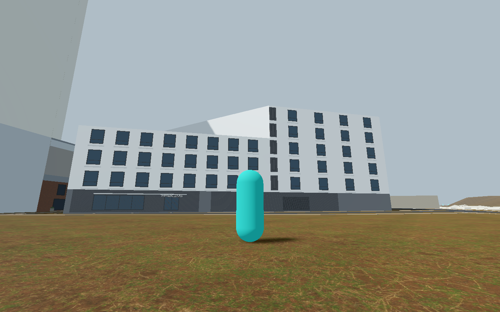
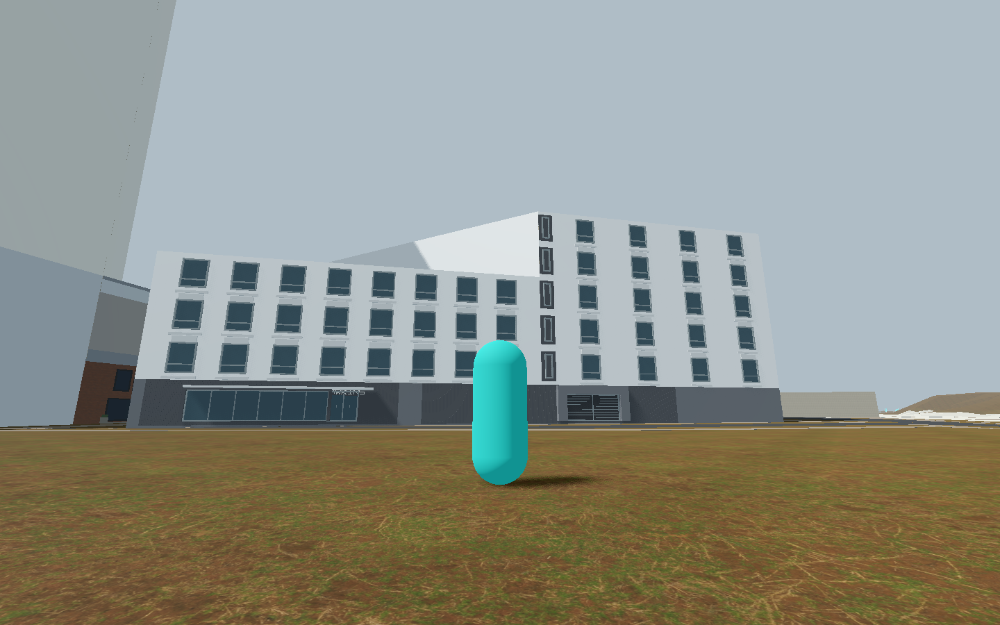
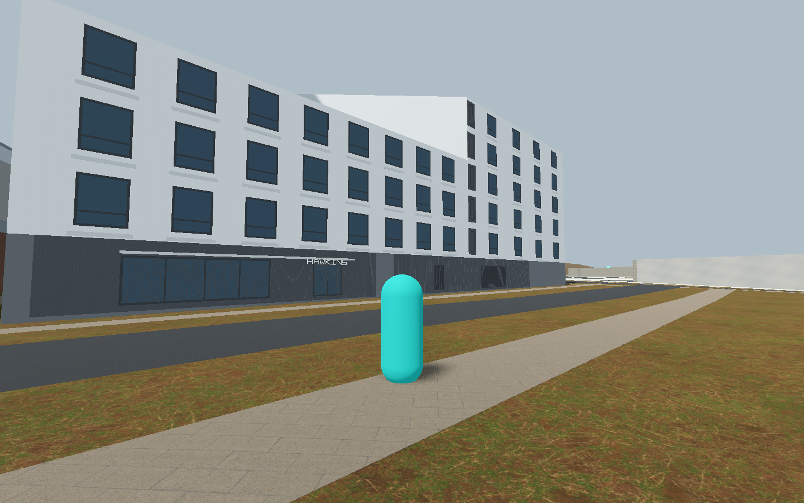
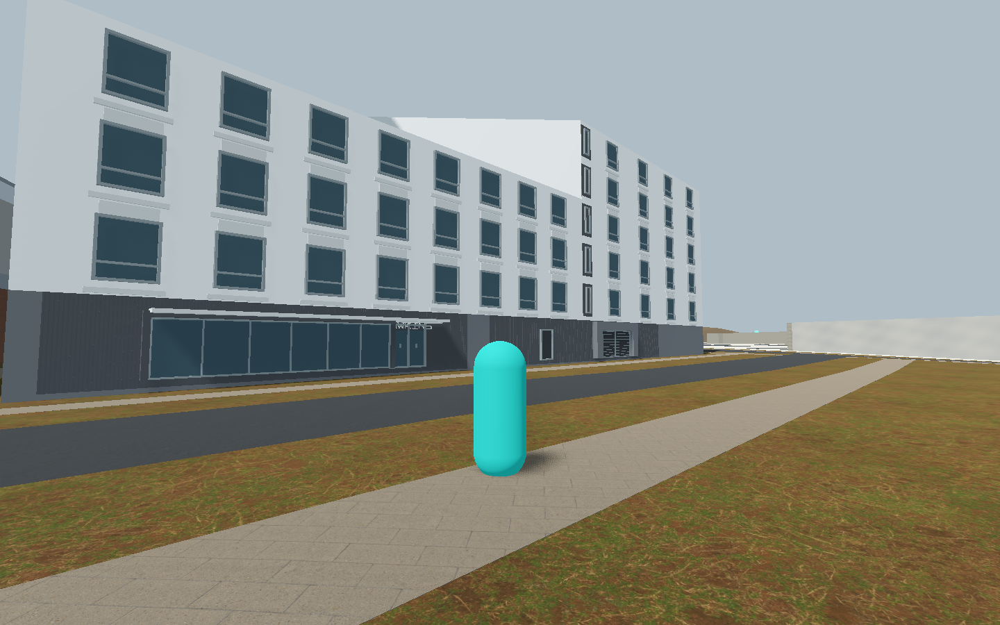
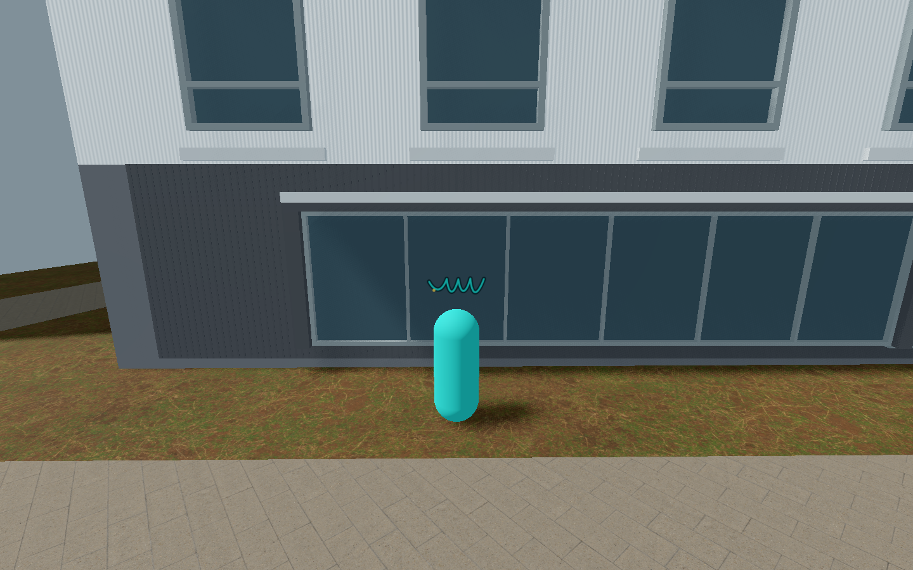

Unpromoted draft; scoped source/mechanics and single installed-still appearance PASS. No motion-stability or full-frontage installed claim.43/213 and33family unchanged.
Scope · Provenance · Gallery index





One scoped installed view; garage, roof and motion stability remain outside its evidence.